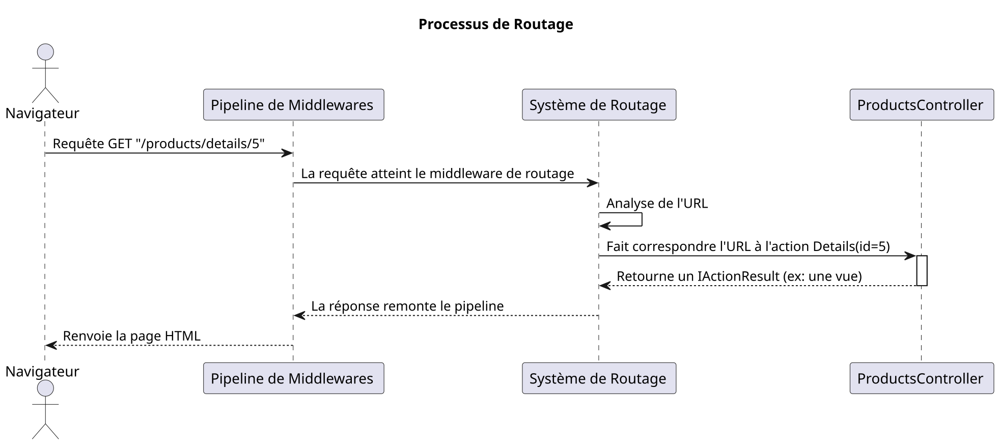

Module 2 : Routage, Contrôleurs et Actions - L'essentiel
Objectifs Pédagogiques
À la fin de ce module, vous serez en mesure de :
Maîtriser le système de routage pour lier une URL à une action de contrôleur.
Différencier et utiliser le routage par convention et le routage par attributs.
Créer des contrôleurs et des actions pour gérer les requêtes des utilisateurs.
Retourner des réponses appropriées en utilisant différents
IActionResult.Gérer les données envoyées par l'utilisateur, que ce soit via l'URL (GET) ou via des formulaires (POST).
Implémenter la validation des données pour garantir leur intégrité.
Passer des données du contrôleur à la vue de manière sécurisée et efficace.
Introduction : Le GPS de votre application
Imaginez que votre application est une grande ville. Les contrôleurs sont les quartiers (le quartier des finances, le quartier commercial...) et les actions sont les bâtiments spécifiques à l'intérieur de ces quartiers (la banque, le magasin de chaussures...). Quand un visiteur (une requête HTTP) arrive en ville avec une adresse (l'URL), comment fait-il pour trouver le bon bâtiment ?
Il a besoin d'un GPS. Le système de routage d'ASP.NET Core est ce GPS. Il analyse l'URL et dit au visiteur : "Pour cette adresse, vous devez aller dans le quartier Products, et chercher le bâtiment Details ". Sans un bon système de routage, toutes les requêtes seraient perdues. Maîtriser ce système est donc fondamental pour construire une application qui fonctionne.
1. Le Système de Routage : Indiquer le chemin
Comment ASP.NET Core sait-il que l'URL /Blog/Details/1 doit exécuter la méthode Details(1) à l'intérieur de la classe BlogController? C'est le travail du routage. Il existe deux manières principales de configurer ce GPS.
Le Routage par Convention : La Poste Standard
C'est l'approche classique, définie de manière centralisée dans Program.cs. Pensez-y comme le format d'adresse standard de la poste : Numéro Rue, Ville, Code Postal. Toutes les adresses suivent le même modèle.
Dans Program.cs, vous avez cette ligne :
Ce pattern est une "recette" pour lire les URLs :
{controller=Home}: Le premier segment de l'URL est le nom du contrôleur. S'il n'y en a pas, utilise "Home" par défaut.{action=Index}: Le deuxième segment est le nom de l'action (la méthode). S'il n'y en a pas, utilise "Index" par défaut.{id?}: Le troisième segment est un paramètre optionnel nommé "id". Le?le rend facultatif.
URL demandée | Contrôleur | Action | Paramètre |
|---|---|---|---|
|
|
|
|
|
|
|
|
|
|
|
|
|
|
|
|
Le Routage par Attributs : Les Coordonnées GPS
C'est l'approche moderne, surtout pour les APIs. Au lieu d'une règle globale, vous placez "l'adresse" directement sur le bâtiment (le contrôleur ou l'action) à l'aide d'attributs. C'est plus précis et plus lisible.

Exercice 1 : Associer les routes
Pour chacune des URLs suivantes, déterminez quel contrôleur et quelle action seraient appelés en utilisant la route par convention {controller=Home}/{action=Index}/{id?}.
/Store/Inventory/User/Profile/123/About
Correction exercice 1
URL :
/Store/Inventory
Contrôleur :
StoreControllerAction :
Inventory()
URL :
/User/Profile/123
Contrôleur :
UserControllerAction :
Profile(int id)avecidvalant123.
URL :
/About
Contrôleur :
AboutController(le premier segment est le contrôleur)Action :
Index()(car le deuxième segment est manquant, la valeur par défaut est utilisée)
2. Les Contrôleurs et les Actions : Les chefs d'orchestre
Un contrôleur est une classe C# qui hérite de Microsoft.AspNetCore.Mvc.Controller. Son rôle est de recevoir les requêtes, d'effectuer des opérations (comme interroger un modèle) et de retourner une réponse. Une action est une méthode publique à l'intérieur d'un contrôleur.
Les Résultats d'Actions (IActionResult)
Une action ne retourne pas directement du HTML. Elle retourne un "résultat", qui est un objet décrivant ce qu'il faut faire. C'est IActionResult. Pensez-y comme un ordre donné par le chef d'orchestre.
Voici les ordres les plus courants :
View(): "Génère le HTML à partir du fichier de vue correspondant et envoie-le."RedirectToAction("Index", "Home"): "Ne réponds rien, mais dis au navigateur d'aller immédiatement à l'actionIndexduHomeController."NotFound(): "Réponds que la ressource demandée n'existe pas (Erreur 404)."Ok(data): "Réponds que tout s'est bien passé (Code 200) et envoie cesdata(souvent utilisé pour les APIs)."BadRequest(): "Réponds que la requête du client était mal formée (Erreur 400)."
L'utilisation de IActionResult rend vos actions flexibles et faciles à tester.
Exercice 2 : Créer un contrôleur simple
Créez un nouveau contrôleur FaqController avec deux actions :
Index()qui retourne une simpleView().Help()qui redirige l'utilisateur vers l'actionIndex.
Correction exercice 2
Créez un nouveau fichier
FaqController.csdans le dossierControllers.Ajoutez le code suivant :
using Microsoft.AspNetCore.Mvc; namespace MonAppMvc.Controllers { public class FaqController : Controller { // Cette action sera accessible via /Faq ou /Faq/Index public IActionResult Index() { // Pour l'instant, on ne fait que retourner la vue. // ASP.NET Core cherchera le fichier /Views/Faq/Index.cshtml return View(); } // Cette action sera accessible via /Faq/Help public IActionResult Help() { // On donne l'ordre de rediriger. return RedirectToAction("Index"); } } }
3. Gestion des Données de la Requête : Écouter l'utilisateur
Une application devient intéressante quand l'utilisateur peut lui envoyer des informations. Voyons comment les récupérer.
Données via GET (depuis l'URL)
Paramètres de route : L'information fait partie de l'URL elle-même.
URL :
/produit/details/5Action :
public IActionResult Details(int id)ASP.NET Core voit que le nom du paramètre dans la route (
{id?}) correspond au nom du paramètre de la méthode (id) et fait le lien automatiquement.Query String : L'information est ajoutée à la fin de l'URL après un
?.URL :
/produit/recherche?nom=livre&categorie=scolaireAction :
public IActionResult Recherche(string nom, string categorie)ASP.NET Core mappe les clés de la query string (
nom,categorie) aux paramètres de la méthode.
Données via POST (depuis un formulaire) et le Model Binding
Pour des données plus complexes, comme un formulaire d'inscription, on utilise une requête POST. Mais comment récupérer 10 champs de formulaire dans une action sans écrire 10 paramètres ? C'est là qu'intervient le Model Binding.
Le Model Binding est un mécanisme automatique qui prend les données d'une requête (formulaire, query string...) et les utilise pour remplir les propriétés d'un objet C#. C'est comme un assistant qui prend les post-its en désordre sur votre bureau et les range proprement dans un classeur.
Le processus :
Vous créez un Modèle : Une classe C# qui représente les données que vous attendez.
// Models/ProductCreateModel.cs public class ProductCreateModel { public string Name { get; set; } public decimal Price { get; set; } public int Stock { get; set; } }La Vue contient un formulaire dont les champs (
<input>) ont des attributsnamequi correspondent aux propriétés du modèle.<form asp-action="Create" method="post"> <input type="text" name="Name" /> <input type="number" name="Price" /> <input type="number" name="Stock" /> <button type="submit">Créer</button> </form>L'Action du contrôleur accepte un objet de ce modèle en paramètre.
public class ProductsController : Controller { [HttpPost] // Cette action ne répond qu'aux requêtes POST public IActionResult Create(ProductCreateModel model) { // Magie ! L'objet 'model' est automatiquement rempli // avec les données du formulaire. // model.Name aura la valeur de <input name="Name"> // ... logique pour sauvegarder le produit ... return RedirectToAction("Index"); } }
Validation des Données : Le garde du corps
Ne faites jamais confiance aux données de l'utilisateur ! La validation est essentielle. ASP.NET Core la rend très simple avec les Data Annotations. Ce sont des attributs que vous placez sur les propriétés de votre modèle pour définir des règles.
Dans l'action, avant de traiter les données, vous devez vérifier si elles sont valides en utilisant ModelState.IsValid. C'est le rapport du garde du corps : "Chef, tout est en ordre !" ou "Chef, il y a un problème !".
TP : Créer un gestionnaire de produits
Mettons tout cela en pratique en créant un contrôleur ProductsController pour lister, afficher et créer des produits, avec validation.
Énoncé
Dans le dossier
Models, créez un fichierProduct.csqui représentera un produit avecId,Name,Price,Stock. Créez également unProductCreateModel.cs(similaire mais sans Id) avec les Data Annotations pour la validation (nom obligatoire, prix et stock positifs).Créez le contrôleur et une fausse base de données (une liste statique de `Product`).
Implémentez deux actions :
Index(): Récupère tous les produits et les passe à une vue.Details(int id): Récupère un produit par son Id et le passe à une vue. Gère le cas où le produit n'existe pas.
Créez les vues correspondantes pour afficher la liste des produits et les détails d'un produit. La liste doit contenir des liens vers les pages de détails.
Ajoutez deux actions
Createau contrôleur :Une action
[HttpGet]qui retourne simplement la vue du formulaire.Une action
[HttpPost]qui reçoit unProductCreateModel, vérifieModelState.IsValid, crée le produit, l'ajoute à la liste et redirige versIndex. Si le modèle n'est pas valide, elle retourne la vue du formulaire.
Créez la vue
Create.cshtmlavec un formulaire. Utilisez les Tag Helpers (asp-for,asp-validation-for) pour lier le formulaire au modèle et afficher les messages d'erreur.
Correction TP : Créer un gestionnaire de produits
**`Models/Product.cs`** ```c# namespace MonAppMvc.Models { public class Product { public int Id { get; set; } public string Name { get; set; } public decimal Price { get; set; } public int Stock { get; set; } } } ```
Models/ProductCreateModel.cs
Views/Products/Index.cshtml
Views/Products/Details.cshtml
Views/Products/Create.cshtml
Auto-évaluation
Quelle est la route par convention par défaut dans un projet MVC ? a)
"{action}/{controller}/{id?}"b)"{controller=Home}/{action=Index}/{id?}"c)"/api/{controller}/{id}"d) Il n'y en a pas par défaut.Quel
IActionResultutiliser pour renvoyer une erreur "Non trouvé" (404) ? a)BadRequest()b)View("Error")c)NotFound()d)Ok(null)Quel est le rôle du "Model Binding" ? a) Lier une base de données au modèle. b) Lier une vue à un contrôleur. c) Convertir automatiquement les données d'une requête HTTP en un objet C#. d) Valider les données du modèle.
À quoi sert
ModelState.IsValid? a) À vérifier si la connexion à la base de données est active. b) À vérifier si le modèle de données respecte les règles de validation (Data Annotations). c) À vérifier si la vue correspond au modèle. d) À vérifier si l'URL est valide.Expliquez la différence entre une action de contrôleur marquée avec
[HttpGet]et une autre avec[HttpPost]pour une même route (ex:/Products/Create). Pourquoi avons-nous besoin des deux ?Décrivez le flux de validation d'un formulaire, de la soumission par l'utilisateur jusqu'à l'affichage des messages d'erreur.
Quelle est la différence entre passer des données dans la route (ex:
/product/5) et dans la query string (ex:/product?id=5) ? Quand utiliseriez-vous l'une ou l'autre ?
Conclusion de "L'essentiel"
Vous avez fait d'énormes progrès aujourd'hui ! Vous êtes maintenant capable de tracer le parcours d'une requête, de la barre d'adresse du navigateur jusqu'à la bonne méthode dans votre code. Vous savez comment créer des "intersections" ( contrôleurs) et des "destinations" (actions), et surtout, comment écouter et comprendre ce que l'utilisateur vous envoie via des formulaires.
La validation des données est une compétence de sécurité et de robustesse fondamentale que vous venez d'acquérir. C'est l'une des marques d'un développeur professionnel.
Dans le prochain module, nous allons nous concentrer sur la dernière pièce du puzzle MVC : la Vue. Nous verrons comment, avec le moteur Razor, nous pouvons construire des interfaces HTML dynamiques et réutilisables pour présenter joliment toutes les données que nous savons maintenant manipuler.
Projets Suggérés pour Pratiquer
Formulaire de Contact (Débutant)
Description : Créez un formulaire de contact simple (Nom, Email, Message).
Piste technique : Créez un modèle
ContactViewModelavec les Data Annotations ([Required],[EmailAddress]). Créez unContactControlleravec les actionsCreate(GET et POST). Dans l'action POST, si le modèle est valide, affichez une page de succès. Sinon, ré-affichez le formulaire avec les erreurs.
Gestionnaire de Tâches Simplifié (Intermédiaire)
Description : Développez une application de "To-Do list". L'utilisateur doit pouvoir voir la liste des tâches, voir les détails d'une tâche, et en ajouter une nouvelle via un formulaire.
Piste technique : Reprenez la structure du TP Produits. Créez un modèle
TodoItem(Id, Title, Description, IsDone). LeTodoControllergérera la liste en mémoire. Implémentez les actionsIndex,DetailsetCreate( GET/POST) avec la validation.